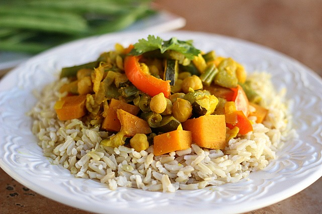

Veggie Curry with Wholegrain Rice

This recipe gives you a quick and easy way to make a delicious, nutritious vegetarian curry.
You can add all sorts of vegetable leftovers to this dish; the more textures and flavours, the merrier!
Note: this is a demo recipe, not a complete one.
Prep time about 1 hour. Serves 6.
Ingredients
- 400 grams wholegrain rice
- 1-2 tablespoons curry paste
- 1 large onion, diced
- 3 cloves garlic, chopped in chunks
- 1 aubergine, roughly chopped
- 2 courgettes, roughtly chopped
- additional vegetables such as spinach, cauliflower, sliced carrots or pre-boiled potatoes
- condiments (salt, chili flakes, root or powdered ginger, dried and fresh herbs)
Steps
- Lightly fry the vegetables in a large pan, starting with the firmest
- Cover the pan, stirring occasionally, until all the vegetables soften
- Add the curry paste and stir in well. Simmer, adding tablespoons of hot water if necessary
- Prepare 1 1/2 cups wholegrain rice; cook for about 40 minutes
- Serve and enjoy!